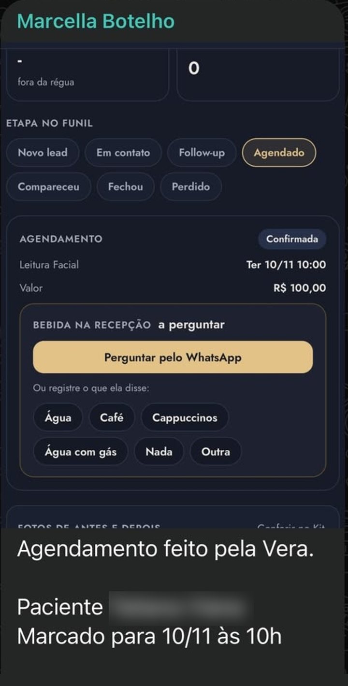
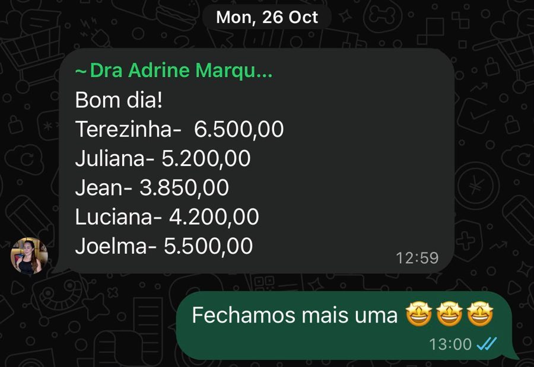
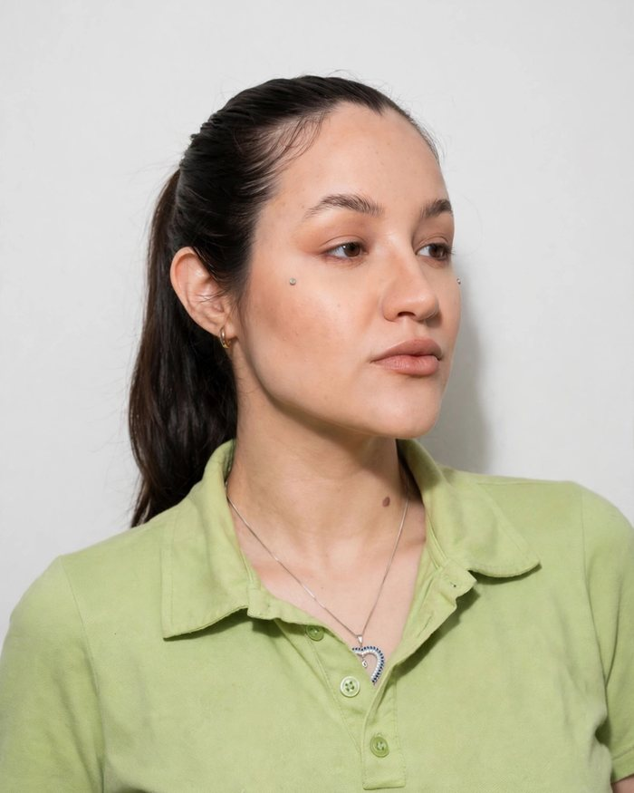

Faz o primeiro contato
Em segundos, assim que a paciente chega pelo anúncio. Ninguém espera enquanto o interesse ainda está quente.
Você cuida do rosto. Nós cuidamos de tudo que vem antes dele: você já faz full face, agora vamos te ajudar aumentar seu faturamento, atraindo novos pacientes de alto padrão e aumentando seu ticket médio.
Talvezvocêjátenhaconfiadonumaagência.Pagou,esperou,recebeuumrelatóriobonito,eaagendacontinuouigual.Oproblemanuncafoiasuatécnica.Foitudooqueacontecedepoisqueapacientechega.
A agência termina no clique. Nós começamos nele.
Os pontos rosados são onde as clínicas mais perdem. Continue rolando.
Quem recebe resposta em minutos continua a conversa. Quando a espera passa de horas, a paciente já está falando com outra clínica.
Quase nunca é o preço. É dizer o valor cedo demais, antes de entender o que a paciente sente quando se olha no espelho e o que ela quer para si.
A Central mostra cada ponto de perda por clínica, por SDR e por conversa. Tempo, roteiro e tom são ajustados em cima do que aparece ali, toda semana.
A Vera é a SDR de IA criada pela Velloce. Ela faz o primeiro contato com cada paciente e atende quando não há ninguém da equipe: à noite, nos fins de semana e nos feriados. No horário comercial, trabalha junto com a SDR humana da clínica.
Em segundos, assim que a paciente chega pelo anúncio. Ninguém espera enquanto o interesse ainda está quente.
Lê o formulário da paciente, pergunta o que ela sente quando se olha no espelho e acolhe. Só depois apresenta o caminho.
Quem chega interessada em um procedimento isolado sai com a consulta de avaliação completa marcada, no método da doutora.
Oferece os horários reais da agenda, confere o comprovante, confirma a consulta e envia a ficha de boas-vindas.
Pergunta como a paciente gosta de ser recebida, da bebida na recepção ao que ela quer conversar com a doutora.
Noite, fim de semana e feriado. Quando a SDR da clínica volta, assume com áudio e com todo o histórico na tela.
Trechos reais de um atendimento da Vera, de sábado para domingo, entre 00h47 e 01h00. Da primeira mensagem à reserva do horário, sem ninguém da equipe acordado. Nome da paciente omitido.
Olá! Acabei de preencher o formulário do Método Ana Thum® e solicito prioridade no meu atendimento.
00:47Oi! Que bom ter você aqui no consultório da Dra. Ana Thum 💛 Sou a Vera, da equipe, e já li o seu formulário com atenção.
Vera · 00:47Vi o que te incomoda [...]. Há quanto tempo você sente isso, ou o que te fez buscar agora?
Vera · 00:48Já tem um tempinho, e o q me fez buscar uma melhora pela aparência é q já estou envelhecendo e queria me cuidar um pouco mais
00:49Entendo, e é muito bonito você querer se cuidar mais 💛 [...] Antes de qualquer procedimento, existe a consulta de Leitura Facial, em que a própria doutora analisa o seu rosto por inteiro e monta um plano só para você.
Vera · 00:50Mas q garantia eu tenho de fazer o pix antes de passar na consulta?
00:55Entendo a sua preocupação, faz sentido querer segurança 💛 Assim que o Pix é conferido, eu confirmo aqui a sua consulta com data, horário e endereço. Se precisar remarcar, é sem custo até 24h antes.
Vera · 00:56Tenho Terça (03/11) às 09:00 e Quarta (04/11) às 17:00. Qual fica melhor para você?
Vera · 00:58Quarta
00:59Ótima escolha 💛 Reservei para você a Quarta (04/11) às 17:00.
Vera · 00:59A Vera confirmou o pagamento da consulta. Sábado, 10h, a paciente estava na cadeira.
A SDR conduziu a conversa com áudios. A Vera recebeu o comprovante, confirmou a consulta e mandou a ficha de boas-vindas. Na Central, a consulta aparece como realizada.
Agendamento feito pela Vera. A equipe comemorou no grupo da clínica.
A Vera atendeu, conduziu a paciente até a consulta de full face, conferiu o pagamento e confirmou a Leitura Facial com a Dra. Ana Thum. Na ficha, a paciente já aparece como agendada, com a recepção preparada para ela.

No grupo com a Velloce, uma doutora de Ariquemes, no interior de Rondônia, listou as pacientes que a Velloce levou até ela no primeiro mês. Cinco procedimentos fechados, R$ 25.250.

Não queremos encher a sua agenda.
Queremos que ela valha mais.
O jantar em família,
sem o celular na mesa.
O sábado com quem você ama,
enquanto a equipe cuida das pacientes.
Mais faturamento. Ticket médio maior. Pacientes que voltam.
E tempo para viver o que esse resultado compra.
É quando os primeiros agendamentos costumam chegar. Quanto mais rápido você grava e se posiciona, mais cedo eles vêm. O resultado é construído junto.
Analisamos seu perfil, seus casos e seu Instagram, e ajustamos o posicionamento antes de investir um real.
Preparamos os roteiros e enviamos uma equipe de filmagem. Os conteúdos viram anúncio e também o feed do seu Instagram.
A paciente passa por um formulário com seus antes e depois e perguntas que qualificam. O anúncio aprende com quem chega até o fim, e a cada dia chegam leads melhores.
A Vera faz o primeiro atendimento a qualquer hora. As SDRs entram junto, com escuta e áudio, até o agendamento.
Quem hoje vende procedimentos isolados aprende, com o nosso método, a conduzir a paciente até o full face, na consulta e no fechamento. Cada caso novo vira o antes e depois que vende o próximo. O ticket médio sobe e quem já é sua paciente volta mais vezes.
Antes de qualquer gravação, a Velloce define como a sua marca deve ser vista. Cada conteúdo nasce com uma intenção: atrair a paciente certa, filtrar quem só tem curiosidade ou levar até o formulário. O protagonista é sempre o seu método, nunca um procedimento isolado. Você posta, e a estratégia e a produção ficam com a gente.
Uma entrevista de posicionamento só com você. O que te torna referência, como você enxerga o rosto, o que as suas pacientes mais perguntam. Tudo pensado para elevar a sua autoridade.
A partir da essência, montamos os temas que educam a paciente do zero até ela entender por que o full face é o caminho.
Decidida mês a mês, com leitura do que está funcionando no nicho. Vídeo de cinema, gravação do celular, carrossel, antes e depois e análise de caso, sem um formato dominar o feed.
A equipe de cinema grava na sua clínica 7 vídeos de venda, com teleprompter e roteiros estratégicos. Cada um já começa o funil: prende quem tem perfil e poder aquisitivo e leva até o formulário.
As dúvidas e os receios reais das pacientes no WhatsApp viram os próximos temas. Você responde no feed antes que a paciente precise perguntar.
O formulário de qualificação é o coração da captação. Ele mostra os seus antes e depois e faz as perguntas certas. Só chega ao WhatsApp quem vai até o fim. E o anúncio aprende com cada uma delas: a cada semana chegam pacientes mais conscientes e mais qualificadas.
Ela escuta o vídeo inteiro, encontra os ganchos que prendem nos primeiros segundos, propõe o ritmo, a trilha e as animações e prepara as duas versões de cada vídeo. A direção criativa continua humana, e cada vídeo sai com cenas que não se repetem.
Gravado na clínica com a nossa equipe e editado com a E.D.I.T.H. Cada detalhe tem uma função no caminho da paciente.
A Central também é o app da doutora. Ela abre com boas-vindas, pergunta como você está se sentindo e mostra o que fazer hoje: os stories sugeridos, com o motivo de cada um, e o que já está pronto para postar.
Uma landing page feita sob medida, que não lista procedimentos: conta a história do seu método em capítulos, até a paciente sentir que precisa te conhecer. Este é o da Dra. Gabriela Werner.
"Existe um dia em que você olha no espelho e não reconhece mais o próprio rosto."
Capítulo I · O espelho"Guarde este rosto. Você vai reencontrá-lo."
Nenhuma outra aceleradora entrega isso. Construímos a Central para clínicas de alto padrão, com inteligência artificial em cada etapa.
Cada doutora com o próprio número na API oficial da Meta. Sem QR Code, sem conexão caindo no meio do atendimento, sem paciente sem resposta porque o celular desligou.
A Vera faz o primeiro contato no primeiro minuto e cobre a noite, o fim de semana e o feriado. A SDR humana conduz com áudio e escuta. As duas trabalham na mesma conversa, com o mesmo histórico.
Um funil só seu, que nenhuma outra clínica vê. Cada paciente na etapa certa, acompanhada pela SDR da sua clínica. A Central avisa quando alguém fica sem resposta ou quando a janela de 24 horas do WhatsApp está perto de fechar.
Respostas do formulário, de qual anúncio ela veio, toda a conversa, notas da equipe e a próxima ação. Quem atende sabe com quem está falando antes de dizer oi.
Comprovante conferido, consulta confirmada, ficha de boas-vindas enviada, lembrete antes do horário e a bebida preferida anotada para a recepção.
Nenhuma doutora vê os dados de outra. A doutora acompanha tudo sem precisar entrar na conversa, e cada pessoa da equipe vê só o que precisa.
Resposta, agendamento, comparecimento e retorno do anúncio, lado a lado. Você vê onde a clínica ganha, onde perde e o que mudou depois de cada ajuste.
Role devagar. Cada curva da nossa logo foi desenhada por um motivo.
As duas curvas são o contorno da face e se encontram no queixo. Trabalhamos só com procedimentos full face, então a nossa marca é um rosto inteiro, nunca um detalhe.
O braço direito do V termina acima do esquerdo de propósito. Quem entra na Velloce não fica no mesmo lugar: a clínica sobe, e não volta mais para onde estava.
O taupe é a pele, o toque, a escuta. O dourado é o movimento, o resultado, o alto padrão. Sozinha, cada cor é metade. Juntas, formam o rosto.
Nascemos para acelerar clínicas. E aprendemos que, na saúde de luxo, acelerar tem um sentido diferente.
Quem escreve às onze da noite, depois de criar coragem para falar do próprio rosto, merece ser ouvida agora, não amanhã. Somos rápidos para responder e nunca temos pressa para fechar.
Onde o cuidado encontra agilidade.
Sem pressa para fechar.
A pressa é da paciente.
Abordagem de vendedor afasta quem procura alto padrão.
Nossas SDRs deixam a paciente falar, acolhem o que ela sente e só então apresentam o caminho. Falamos de desejo, resultado e sonho, nunca de MLs. A decisão precisa parecer dela, porque é dela.
A Velloce não é fornecedora, é parceira. Só seguimos com doutoras dispostas a aplicar o método junto com a gente. Os critérios guiam a análise, e cada candidatura é avaliada como um todo.
Criou a Velloce. Cuida do relacionamento com as doutoras e analisa pessoalmente cada candidatura.
Estratégia, anúncios e copy. É quem transforma o método da doutora em anúncios que trazem a paciente certa.

Construiu a Central, a Vera e a E.D.I.T.H. Cuida dos processos, das automações, do time de SDRs e da direção criativa.
Pessoas reais, treinadas no método, atendendo as pacientes de cada clínica com escuta e áudio, junto com a Vera.
Leva dois minutos.
Feita pelo Juan Botelho, sócio fundador. Resposta em até um dia útil.
Analisamos seu Instagram e seu comercial, com uma paciente oculta no WhatsApp da clínica.
Você vê a própria conversa analisada na reunião e sai com o diagnóstico, mesmo que não siga com a gente.
Valores claros e por escrito. Você decide no seu tempo, sem pressão para fechar na hora.
Cada candidatura é analisada pessoalmente pelo Juan Botelho, sócio fundador da Velloce. Você recebe a resposta em até um dia útil.
Onde o cuidado encontra agilidade.